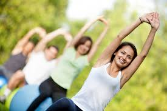

You are only as old as your body feels. Rather, you can be as young as your body feels. For your body to feel young and fit, it is important to feed it healthy food and to also exercise it well just as you would oil a machine to prevent it from rusting.
What better exercise than yoga, which has been practised in India for thousands of years. Yoga asanas are said to hold cures for an array of disorders in the body and also keep you fit and your body supple. Most of the asanas are easy to perform.
Most of us do a lot of things in a bid to not show our age on the face and the body. One of the easiest ways to tone up your body and improve your skin is to do yoga. So go grab your yoga mat and take the first step towards youthfulness as we take a look at ten yoga asanas that will help you stay young.
1. Forward bend with palm on the ground
Inhale and raise your hands up- like how you do in suryanamaskara. Bend forwards while exhaling. Touch your palm on the ground. Hold your breath. Inhale as you rise up. Repeat ten times.
This asana will warm you up, tone your hips and joints and also increase the blood circulation to the head.
2. Warrior pose
Stand straight with feet apart. Left foot points outward, right foot inward and torso straight. Exhale and bend the left knee. Inhale and stretch your arms out. Turn your head to look at your left arm. Hold for ten seconds. Repeat on the other side.
This helps in toning up the knees, calves and glutes.
3. Another warrior pose:
Continuing from the above pose, instead of stretching your arms parallel to the floor, keep the right arm on the right knee and raise the left arm above your head. Look up to see the tip of your right hand.
This tones the hips, thighs and glutes and also tones up the upper arms and the chin muscles.
4. Posture development:
Stand erect and barefoot on a yoga mat, arms on the sides. Feel your heels and toes pressing into the ground. Breathe deeply to realise the equilibrium in your body. Now slowly lift your chin up until your jaw is well stretched. Hold for ten seconds and restore to straight position.
This will help you be more aware of having an erect posture and tone up your double chin.
5. Tree pose:
As we age, the flexibility of our body keeps reducing and it is difficult for us to balance on one leg. To correct this, we should practise the tree pose. Stand straight, with feet next to each other and arms on the side. Place your left sole on your right calf. Fold your hands together and hold it against your chest or above your head. Hold the pose for ten seconds.
6. Squat
Stand with your feet slightly apart. Raise your hands to the shoulder level. Push your knees together and act as though you are trying to sit down on an imaginary chair. Try to bend your knees as much as possible. This will tone up your thighs and glutes and help you attain more control and balance on the body.
7. Downward dog pose:
This is an important step of the surya namaskar. In this asana, get down on all fours- your hands and feet are flat on the ground. Feet are hip width apart. Raise your hips such that your body forms a “V”. Pull your belly button close to the spice. Let your head hang.
It strengthens the spice, improves circulation to the brain and improves overall flexibility.
8. Sphinx pose
Lie face down on the ground. Tuck your elbows on the sides. Inhale and lift your head and chest up by putting some pressure on your palms. Elbows remain on the ground. Hold the pose for five inhalation-exhalations.
This pose will help strengthen your chest and spine. It also tones up your upper arms.
9. Plank pose
The plank pose helps strengthen your spice, improves your balance and core strength- all of which reduce with age.
To do this, get down on your hands and knees. Now, balance on your toes and lift your body up such that your whole body is in one line, from your feet to the head. Keep your arms straight and palms flat on the ground.
10. Seated twist:
Sit cross legged on the ground. Hold your right knee with your left hand. Stretch your right hand outwards such that the palm is touching the floor behind your back. Now twist your torso so that you look back.
This is a holistic asana that will twist the stomach muscles and tone it up. It will also improve your flexibility and reduce double chin.
So practice these yogasanas to keep your body fit, supple and younger looking.